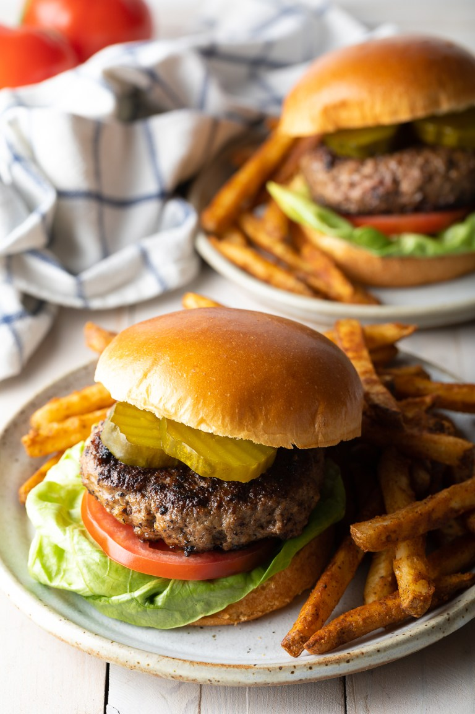

Burger

What Ingredients You Need to Make Homemade burgers
- Ground chuck – We prefer an 80 lean/20 fat ratio for the juiciest burgers
- Crushed crackers or Panko bread crumbs – The best binders for juicy hamburgers. (Could be gluten-free!)
- Worcestershire sauce – Adds a deep beefy, smoky flavor.
- Egg-– To bind all of the ingredients together without drying.
- Milk – The enzymes help to soften and tenderize the ground beef.
- Seasonings: Salt, Garlic Powder, Onion powder, Pepper, or other spices of choice.
- First, set out a large mixing bowl and add in the ground beef, crushed crackers, egg, Worcestershire sauce, milk, and spices.
Use your hands to thoroughly combine until the mixture is very smooth.
- press the meat down in the bowl, into an even disk. Use a knife to cut and divide the hamburger patty mixture into 6 – 1/3 pound grill or skillet patties, or 12 thin griddle patties. Like so:
Set out a baking sheet, lined with wax paper or foil, to hold the patties. One at a time, gather the patty mix and press firmly into patties of your desired thickness. You typically want hamburger patties to be slightly larger than the buns they’ll be served on since they’ll shrink a bit in the cooking process.
Place the formed patties on the baking sheet. With thick patties, press an indentation in the center of each patty, so they don’t puff up while cooking.
You can stack the patties with sheets of wax paper between layers if needed.
- Preheat the grill or skillet to meadium heat, approx 350-400 Fo
- put the patties
- Articulate the bread and the Seasonings and voala!